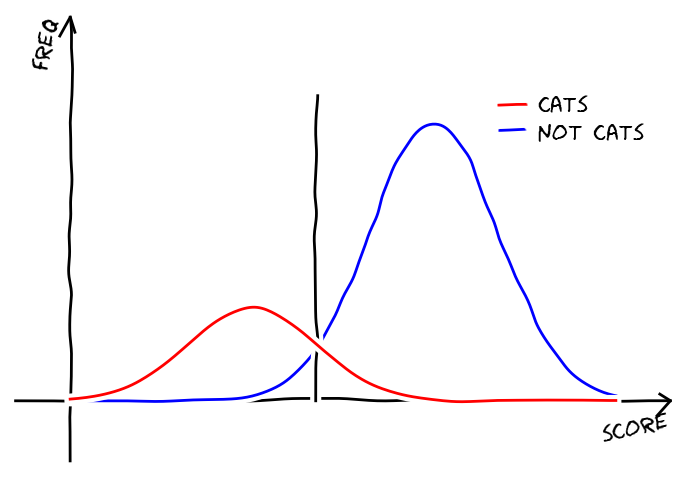
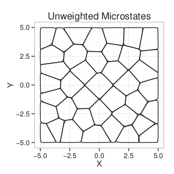
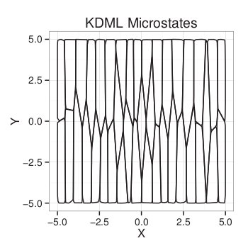
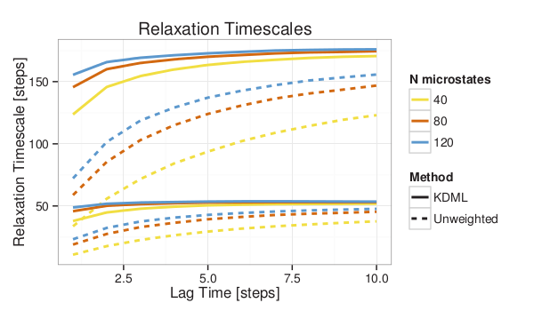

- Markov state modes are great.
- You can model protein dynamics and stuff.
Why Folding is Easy: MSMs for Protein Conformation Change
Robert T. McGibbon
April 22, 2013
Background
Plan of Attack
- Resolving conformation slow conformation changes within a folding data set.
- Manual parameter selection
- Statistical over fitting
- Adaptive sampling
MSM Parameter Selection
- MSM construction is a mix of supervised and unsupervised learning problems.
- Unsupervised learning is the problem of finding "hidden" structure in unlabeled data, where there's no right answer.
- How many conformational states does a protein adopt? The answer is in the eye of the beholder.
- Parameterizing a transition matrix is supervised.
MSM State Decomposition
The MSM state decomposition, clustering, is characterized by a bias-variance trade off.
- Bias: As you lower the number of states, you introduce systematic error in modeling the dynamics.
- Hamiltonian dynamics are completely Markovian in $\mathbb{R}^{6N}$
- Variance: As you raise the number of states, you're increasing subject to statistical noise in the transition matrix estimation.
- How do we balance this trade off?
Choosing the states' shape

- Conformational change is characterized by slow conformationally subtle transitions.
- To resolve these transitions in our models, our states need to be "smaller" than the spatial extent of the process.
- Increasing the number of states is not the only way to lower the bias -- we can also pick the shape of our states more intelligently.
Protein motions aren't isotropic
Our MSM states shouldn't be either
- Goal: to learn a distance metric for clustering which maximally separates kinetically close and kinetically distant conformations.
- Different structural degrees of freedom should be weighted according to their discrimitory power (equilibration rate).
Large-Margin Learning

- A common goal in supervised learning is to construct binary classifiers.
- Examples: actives vs. inactives, cats vs. others.
- The "margin" is the distance of the object's score from the the decision threshold.
- Large margin approaches attempt to find a classifier via optimization methods that maximize the (avg) margins.
Large-Margin Distance Metric
- Consider a set of $N$ triplets of structres, $(a, b, c)$, such that $a$ and $b$ appear close together in a single trajectory, while $a$ and $c$ do not.
- We restrict our attention to the set of squared Mahalanobis metrics.
- And maximize the margin of separation between the close and far pairs. $$ d^{\mathbf{X}}(\vec{a}, \vec{b}) = (\vec{a} - \vec{b})^{T} \mathbf{X} (\vec{a} - \vec{b}) \ \max_{\mathbf{X},\rho} \left[ \alpha \rho - \frac{1}{N} \sum_i^N \lambda \left(d^\mathbf{X}(\vec{a}_i,\vec{c}_i) - d^\mathbf{X}(\vec{a}_i, \vec{b}_i) - \rho \right) \right] $$
Optimization and Constraints
$$ \max_{\mathbf{X},\rho} \left[ \alpha \rho - \frac{1}{N} \sum_i^N \lambda \left(d^\mathbf{X}(\vec{a}_i,\vec{c}_i) - d^\mathbf{X}(\vec{a}_i, \vec{b}_i) - \rho \right) \right] $$
- The matrix $\mathbf{X}$ is constrained to be positive semidefinite.
- Optimized by a gradient descent algorithm with rank-1 updates.
- Shen, C.; Kim, J.; Wang, L. Scalable large-margin Mahalanobis distance metric learning. IEEE Trans. Neural Networks 2010, 21, 1524–1530
Model System

- Two dimensional Brownian dynamics, where the diffusion constant in the $y$ direction is 10 times greather than the diffusion constant in the $x$ direction.
- $\mathbf{X} = \begin{pmatrix} 0.9915 & 0.0 \\ 0.0 & 0.0085 \end{pmatrix}$
Model System
